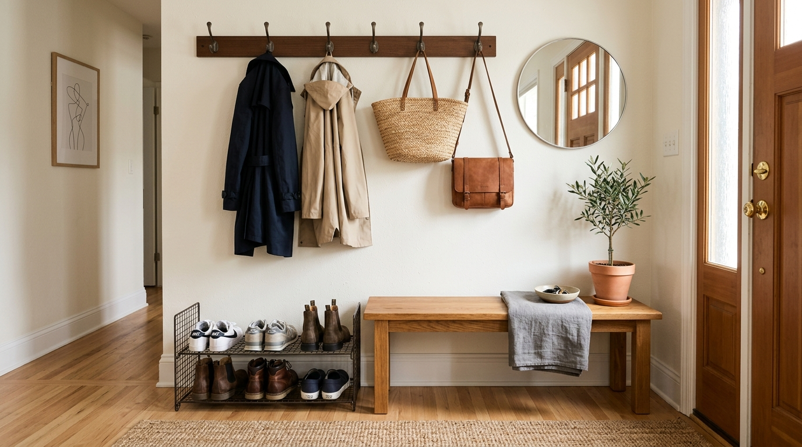
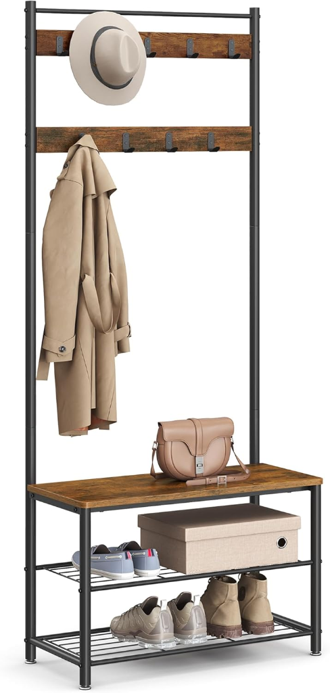

A small entryway does not necessarily need more storage. It needs clearer functions.
You step through the front door of your apartment carrying groceries, work bags, keys, and an umbrella. With nowhere obvious to place your belongings, the coat lands on the back of a dining chair, your tote bag drops onto the floor, and your shoes get kicked off directly into the primary walking path.
Within forty-eight hours, the small threshold near your door transforms into a chaotic obstacle course. When coats, bags, footwear, and getting-ready routines all compete for the same two square meters of floor space, clutter becomes almost inevitable.
The solution is not crowding your entryway with mismatched plastic bins or oversized cabinets. The solution is organizing your entrance around three distinct everyday jobs: HANG → SIT → STORE. When you establish clear boundaries for vertical hanging, a stable seat for changing footwear, and dedicated shoe containment, your entryway flows effortlessly—whether you live in a compact studio or a busy rental flat.
Why Small Entryways Become Cluttered
In most small apartments, entryways fail not because residents are messy, but because the space lacks functional structure. Several predictable friction points occur near the door:
- No Landing Pad for Outerwear: When hooks or hangers are not immediately accessible within arm's reach of the door, coats and jackets migrate to sofas, chairs, or doorknobs.
- The "Shoe Pile" Phenomenon: Without a defined, easily accessible shoe zone, household members kick off their footwear right at the threshold, blocking door swings and creating visual chaos.
- Lack of Transition Seating: Putting on or taking off boots while balancing on one foot is uncomfortable. Without a place to sit, people drag shoes into the living room or prop themselves awkwardly against walls.
- Bag and Backpack Drift: Everyday totes, backpacks, and gym duffels occupy floor space because there is no designated hanging point strong enough to hold them.
A small entryway functions best when organized by function rather than simply piling objects into random containers. For foundational layout guidance, explore our analysis of how to organize a narrow entryway without making it feel smaller.
The Hang → Sit → Store System Explained
To restore calm at your doorway, divide your entryway into three vertical working zones:

1. HANG — Keep Everyday Outerwear Within Reach
The upper vertical zone should be dedicated exclusively to active everyday items: current-season coats, lightweight jackets, hats, scarves, and daily commuter bags.
By taking advantage of vertical wall space, you keep bulky garments entirely off the floor and furniture. The critical rule is restraint: only keep current daily outerwear in this zone. Off-season parkas and formal coats belong in your primary bedroom wardrobe. For seasonal rotation routines, read our complete guide on how to organize a small entryway for every season.
2. SIT — Create a Dedicated Place to Change Shoes
A functional entryway needs a stable surface to sit while putting on or removing shoes. This single feature completely transforms the transition between the outside world and your home.
When you have a dedicated seat, shoes stay at the door naturally rather than being tracked across carpets and living room floors. In small spaces, this surface should remain clear of permanent clutter so it is always ready to use.
3. STORE — Keep Everyday Shoes Contained
The lowest zone—directly beneath the bench—should provide structured storage for the 3 to 6 pairs of shoes worn throughout the current week.
Keeping everyday footwear on open shelves keeps them off the walking path while ensuring they remain effortless to grab during morning departures. Occasional footwear, athletic cleats, and special-occasion heels should live in bedroom shoe organizers.
How to Apply the System in a Small Apartment
You can implement this system using furniture you already own or by arranging simple standalone elements. Follow these six practical steps:
- Audit Daily In-and-Out Items: Identify the 2 jackets, 1 bag, and 2 pairs of shoes each resident uses daily.
- Assign Prime Arm's-Reach Access: Place hooks at natural shoulder height so hanging up a jacket requires zero effort.
- Establish a Sitting Boundary: Use a compact stool, small bench, or existing sturdy ledge near the entrance.
- Define the Shoe Perimeter: Place a small mat, shallow tray, or low shoe rack directly beneath the seating area.
- Limit Volume: Enforce a strict "active only" policy in the entryway to prevent clutter creep.
- Keep Pathways Clear: Ensure your setup preserves at least 30 to 36 inches of clear walkway for easy entry and exit.
To explore additional apartment entryway setups, see our curated selection of entryway storage products that save space.
Where a 3-in-1 Hall Tree Fits
If you do not have separate space for individual wall hooks, a separate bench, and a standalone shoe rack, a compact all-in-one hall tree can be a highly practical way to combine all three functions into a single vertical footprint.

VASAGLE 3-in-1 Coat Rack & Hall Tree with Shoe Storage Bench
Solution: This compact industrial-style unit integrates an upper coat rack with double-row hooks, a sturdy rustic brown seating bench, and two lower wire mesh shoe shelves in one unified vertical frame.
- Combines hanging hooks, sturdy bench seating, and 2 shoe racks in a slim vertical profile
- Black steel frame with rustic brown engineered wood panels and leveling feet
- Two rows of sturdy metal hooks provide dedicated hanging space for coats, hats, and daily bags
How to Use a Hall Tree Without Creating More Clutter
A multi-functional hall tree only works if you use it with functional discipline. Follow these guidelines to keep your 3-in-1 unit looking calm and organized:
- HANG: Use one hook per family member for active outerwear plus one hook for a daily commuter bag. Avoid layering five heavy winter coats on top of each other.
- SIT: Keep the wooden bench surface clear. Do not treat the seat as a long-term storage shelf for mail, parcels, or unfolded laundry.
- STORE: Place daily sneakers and walking shoes on the wire shelves. If you have muddy boots, place a slim absorbent mat underneath.
Who This Setup Makes Sense For (And When It Doesn't)
To make an informed decision for your home, consider whether a 3-in-1 hall tree matches your entryway layout:
| Ideal For | When It May NOT Be Ideal |
|---|---|
| Small apartments needing coat, bag, and shoe storage in one spot | Extremely narrow hallways with less than 28 inches of total clearance |
| Renters who cannot drill multiple heavy shelving units into walls | Homes with dedicated built-in entryway closets |
| Households that practice removing shoes at the entrance | Households requiring closed cabinet storage for 20+ pairs of shoes |
Measure Before You Buy: The Space Checklist
Before introducing any entryway furniture into a small apartment, measure your threshold carefully:
✓ Wall Width: Measure the open wall segment beside your door to ensure the unit fits comfortably.
✓ Depth & Walkway Clearance: Verify that at least 30 inches of open walking path remains when the unit is in place.
✓ Door Swing Arc: Open your front door fully to confirm it will not collide with the frame or hanging coats.
✓ Vertical Clearance: Check for nearby light switches, intercom panels, or thermostat controls.
Note: Always check the current product listing for verified dimensions, specifications, and weight ratings before purchasing.
A Simple 15-Minute Entryway Reset
Whether you purchase furniture or use what you currently have, you can reset your entryway today with this zero-cost exercise:
- Clear Everything Out: Remove every shoe, coat, umbrella, and stray object from the entryway floor and corners.
- Sort by Function: Separate items into three piles: Hang (outerwear), Sit (essentials needed while changing shoes), and Store (active footwear).
- Archive Non-Daily Clutter: Move out-of-season jackets, extra pairs of shoes, and sports gear into bedroom closets.
- Assign Homes: Return only 2–3 active jackets and 2–3 pairs of everyday shoes to your entryway zone.
- Verify the Walkway: Step outside, close the door, and walk back in. The space should feel open, welcoming, and intuitive.
For broader ideas on entrance styling, browse our complete library of entryway organization ideas.
The Takeaway: Give Your Entryway 3 Clear Jobs
A tidy small entryway is not about buying dozens of organizers—it is about giving your entrance three clear, functional boundaries:
HANG → active coats and daily bags
SIT → comfortable shoe changing
STORE → organized everyday footwear
By focusing on these three core functions, your small apartment entrance will remain a calm, practical welcoming point every time you step through the door.
Frequently Asked Questions
If your hallway has less than 30 inches of width, prioritize vertical wall hooks for hanging and a ultra-slim wall-mounted shoe cabinet. You can place a small stool further down the hallway where space allows.
We recommend keeping a maximum of 2 to 3 pairs of currently active shoes per household member in the entryway. All seasonal or occasional footwear should be stored in bedroom closets.
Yes. Freestanding hall trees require zero wall drilling for support (though anti-tip wall straps are included for household safety), making them ideal for rental apartments.
Are you 18-24 or a Student? Get 6 Months of Prime for $0!
Limited Time Offer (Ends Oct 9): Enjoy fast, free shipping, unlimited streaming, $0 food delivery (Grubhub+), fuel savings (10¢/gal), Prime Reading, unlimited Amazon Photos storage, and exclusive grocery deals. Claim your 6-month free trial of Prime for Young Adults today.
Try Prime for Free →